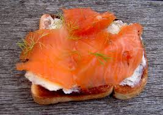
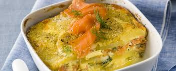
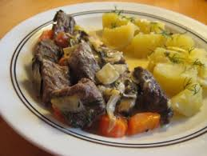
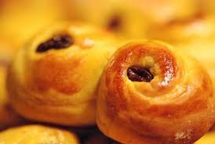

Chi Siamo
Thriller italiani
Recensioni
Autori
Interviste
Contatti
RICETTE DAL NORD
Di Elena Lippi
ANTIPASTI

ANTIPASTI:
Focaccine di segale
- Svezia
Aringhe alla panna
- Norvegia
Salsa di gamberetti su toast (Skagenröra)
- Svezia
PRIMI
PIATTI

PRIMI PIATTI:
Artsoppa
- Svezia
Gnocchi di patate
- Norvegia
Zuppa di piselli: Gule Aerter
- Danimarca
SECONDI PIATTI

SECONDI PIATTI:
Cheese Pudding
- Irlanda
Fagiano alla scozzese: Il piacere di Rob Roy
- Scozia
Insalata di patate e salmone: Gravlax
- Svezia
Maiale con le mele
- Danimarca
Patate caramellate: Brunede Kartofler
- Danimarca
Pesce Halibut e patate
- Islanda
Pytt i panna (pezzetti in padella)
- Svezia
Plokkfiskur
- Islanda
Mussel Brose (zuppa di cozze)
- Scozia
DOLCI

DOLCI:
Biscotti di avena norvegesi: Havreflan
- Norvegia
Biscottini speziati: Pepparkakor
- Svezia
Budino di riso
- Danimarca
Crostata di rabarbaro-Hjónabandssæla
- Islanda
Dolcetti di Santa Lucia
- Svezia
Kransekake:dolce tipico norvegese di mandorla
- Norvegia
Vino danese: Glogg
- Danimarca